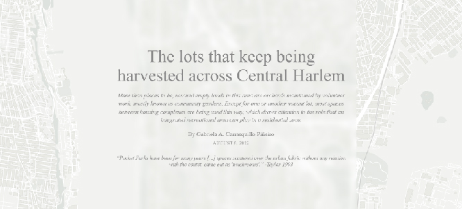

Hello, my name is Gabriela Carrasquillo, and I'm a journalist that loves storytelling and working on small data stories...? And mapping.
idk what to write here... probs social media info???

The lots that keep being harvested across Central Harlem
Illustrator • Datawrapper • ai to HTML • Scrollama • Reporting • Photos • HTML and CSS • geojson.io • github repo
The return to the countryside in the face of crisis
Illustrator • Mapbox • ArcGISPro • ai to HTML • Reporting • HTML and CSS • github repo
The largest new hotel developments in Puerto Rico are beachfronts established on the north coast
Python • Flourish • Illustrator • ai to HTML • github repo

Community of Las Piedras manages to stop the installation of a telecommunications tower
Reporting • Photojournalism

When it Comes to Telecom Tower Construction, Communities are ignored
Investigative reporting • Photojournalism • Flourish